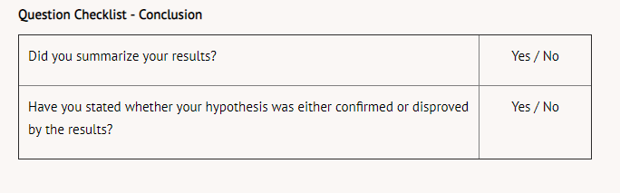

In this step, researchers review the data they have collected, often comparing data from the experimental group with the data from the control group. The comparison must show a large enough difference between the two groups before the information can be considered relevant or valid. Sometimes trends become evident in the graphs and charts, but not always. On many occasions scientists must conclude the data does not support their stated hypotheses. This information is valuable too! You must summarize your results in a few sentences, clearly indicating whether you proved or disproved your hypothesis.
Using our reaction time example, we can present the conclusion in the following manner:
The data collected from Group A and Group B showed a significant difference between the reaction times of participants. Those who were of normal fullness reacted 35.5% faster than participants who were extremely full. This supports the hypothesis that being extremely full negatively affects response time.
When writing conclusions, refer to the checklist below and answer "yes" to both the questions.
